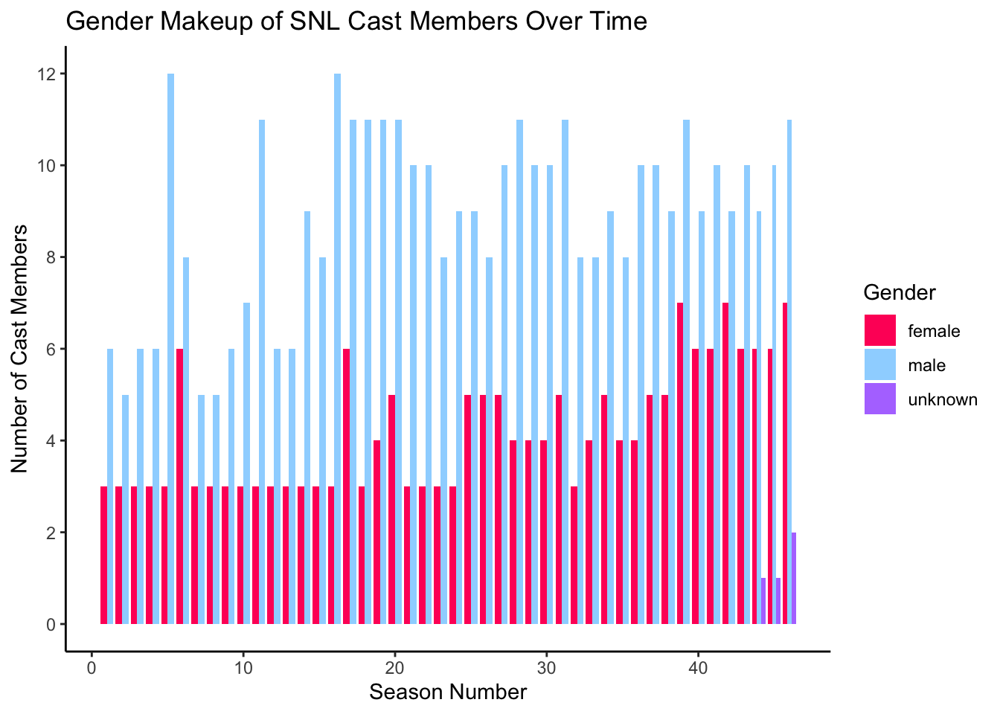

library(tidyverse)
library(ggplot2)
library(scales)
knitr::opts_chunk$set(echo = TRUE, warning=FALSE, message=FALSE)
if(! require(scales))
install.packages("scales", repos=
"http://cran.us.r-project.org")Challenge 8
snl
Joining Data
Read in data
Reading in the three SNL data sets. I am interested in gender makeup of cast over time, and possibly air time(season fraction) if I have more time.
#filter by cast members, and only selecting the columns from this df that I am interested in
snl_actors <- read_csv("_data/snl_actors.csv") %>%
filter(type=="cast") %>%
select(aid, type, gender)
snl_actors# A tibble: 154 × 3
aid type gender
<chr> <chr> <chr>
1 Kate McKinnon cast female
2 Alex Moffat cast male
3 Ego Nwodim cast unknown
4 Chris Redd cast male
5 Kenan Thompson cast male
6 Aidy Bryant cast female
7 Mikey Day cast male
8 Heidi Gardner cast female
9 Lauren Holt cast female
10 Pete Davidson cast male
# … with 144 more rows
# ℹ Use `print(n = ...)` to see more rows#selecting columns from snl_casts useful for analysis
snl_casts <- read_csv("_data/snl_casts.csv") %>%
select(aid, sid, n_episodes, season_fraction)
snl_casts# A tibble: 614 × 4
aid sid n_episodes season_fraction
<chr> <dbl> <dbl> <dbl>
1 A. Whitney Brown 11 8 0.444
2 A. Whitney Brown 12 20 1
3 A. Whitney Brown 13 13 1
4 A. Whitney Brown 14 20 1
5 A. Whitney Brown 15 20 1
6 A. Whitney Brown 16 20 1
7 Alan Zweibel 5 5 0.25
8 Sasheer Zamata 39 11 0.524
9 Sasheer Zamata 40 21 1
10 Sasheer Zamata 41 21 1
# … with 604 more rows
# ℹ Use `print(n = ...)` to see more rows#selecting columns date/season info for time variable
snl_seasons <- read_csv("_data/snl_seasons.csv") %>%
select(sid, year, n_episodes)
snl_seasons# A tibble: 46 × 3
sid year n_episodes
<dbl> <dbl> <dbl>
1 1 1975 24
2 2 1976 22
3 3 1977 20
4 4 1978 20
5 5 1979 20
6 6 1980 13
7 7 1981 20
8 8 1982 20
9 9 1983 19
10 10 1984 17
# … with 36 more rows
# ℹ Use `print(n = ...)` to see more rowsBriefly describe the data
Data sets include data starting at season 1 of snl, and give information about number of episodes in a season, years of seasons, cast members over the seasons, gender of cast members, episode fraction of cast members etc. There are a couple variables in common, cast member name, and season number. This is where I will join the data sets. I think this data will be useful to look at cast member makeup of seasons over time.
Tidy Data (as needed)
(see above and after join)
Join Data
Joining 3 datasets
#joining first two datasets
snl1<-snl_actors %>%
full_join(snl_casts, by="aid")
snl1# A tibble: 614 × 6
aid type gender sid n_episodes season_fraction
<chr> <chr> <chr> <dbl> <dbl> <dbl>
1 Kate McKinnon cast female 37 5 0.227
2 Kate McKinnon cast female 38 21 1
3 Kate McKinnon cast female 39 21 1
4 Kate McKinnon cast female 40 21 1
5 Kate McKinnon cast female 41 21 1
6 Kate McKinnon cast female 42 21 1
7 Kate McKinnon cast female 43 21 1
8 Kate McKinnon cast female 44 21 1
9 Kate McKinnon cast female 45 18 1
10 Kate McKinnon cast female 46 17 1
# … with 604 more rows
# ℹ Use `print(n = ...)` to see more rows#joining new data set to previous join
snl2<-snl1 %>%
full_join(snl_seasons, by="sid")
snl2# A tibble: 614 × 8
aid type gender sid n_episodes.x season_fraction year n_episo…¹
<chr> <chr> <chr> <dbl> <dbl> <dbl> <dbl> <dbl>
1 Kate McKinnon cast female 37 5 0.227 2011 22
2 Kate McKinnon cast female 38 21 1 2012 21
3 Kate McKinnon cast female 39 21 1 2013 21
4 Kate McKinnon cast female 40 21 1 2014 21
5 Kate McKinnon cast female 41 21 1 2015 21
6 Kate McKinnon cast female 42 21 1 2016 21
7 Kate McKinnon cast female 43 21 1 2017 21
8 Kate McKinnon cast female 44 21 1 2018 21
9 Kate McKinnon cast female 45 18 1 2019 18
10 Kate McKinnon cast female 46 17 1 2020 17
# … with 604 more rows, and abbreviated variable name ¹n_episodes.y
# ℹ Use `print(n = ...)` to see more rowsMore Tidying
#Reducing columns further to simplify analysis, arranging data in order of season1->46, and removing NA rows
snl2<-snl2 %>%
select("gender", "sid") %>%
arrange(sid) %>%
na.omit(.)
snl2# A tibble: 607 × 2
gender sid
<chr> <dbl>
1 male 1
2 male 1
3 male 1
4 male 1
5 male 1
6 female 1
7 female 1
8 female 1
9 male 1
10 male 2
# … with 597 more rows
# ℹ Use `print(n = ...)` to see more rows#grouping data set by season, then generating a count of gender by season
snl2<-snl2 %>%
group_by(sid) %>%
count(gender)
snl2# A tibble: 95 × 3
# Groups: sid [46]
sid gender n
<dbl> <chr> <int>
1 1 female 3
2 1 male 6
3 2 female 3
4 2 male 5
5 3 female 3
6 3 male 6
7 4 female 3
8 4 male 6
9 5 female 3
10 5 male 12
# … with 85 more rows
# ℹ Use `print(n = ...)` to see more rowsAnalyzing Joined Dataset
#Creating a grouped barchart. I use the scales package for this code chunk
ggplot(snl2, aes(fill=gender, y=n, x=sid)) +
geom_bar(position="dodge", stat="identity", width=.85, space=0.5)+
labs(x="Season Number", y="Number of Cast Members", fill="Gender", title="Gender Makeup of SNL Cast Members Over Time")+
scale_y_continuous(breaks= pretty_breaks())+
scale_fill_manual(values = c("#FF1466", "#9ED6FF", "#B37BFF"))+
theme_classic()
I did not expect a gender disparity in snl casts to persist so long over time. I’m surprised it is not 1:1 or closer to that by now.